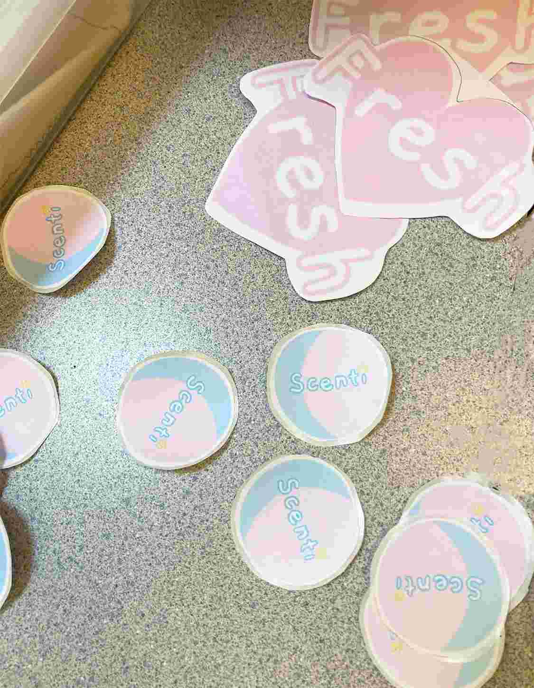

.png)
At the beginning, we created 3 product idea sketches. We maintained open, willing minds to explore. We struggled with group discussions, and had some arguments. However, after sharing our ideas to a set of students, our thoughts became a lot more organized. Talking with our target audience helped us know where to concentrate our marketing efforts and what we should offer that could be compelling and well received. We reflected on the feedback, and decided on eliminating bird perches from our product list. We put our focus into developing the idea of scented stuffies. We documented the cost of goods, and started to research materials for manufacturing. It was at this time we decided on the Vice Presidents of our company. Furthermore, we created a company name: Scenti. We created a logo that could be easily identified with our brand and reflected our company’s values and services.
1. We cut the fabric following a template to keep a consistent heart, star, and moon shape.
2. We sew everything but a small section of the outline of the shape.
3. We flip the shape inside-out such that the seam is clean and professional.
4. We spray the stuffing with essential oils and fill the shape until stuffed.
5. We sew the remaining outline of the shape.
6. We use a thin, elastic band as a loop to hang our small stuffy. We attach the elastic loop to the "top" of the shape.
7. We give the shape one more spray of scent.
. Joannes Fabric (pink, yellow, blue)
. Amazon Essential oils
. Amazon Elastic
. Thread
. Needles
. Polly Fill
Please do not edit our doc! (We worked super hard on this)